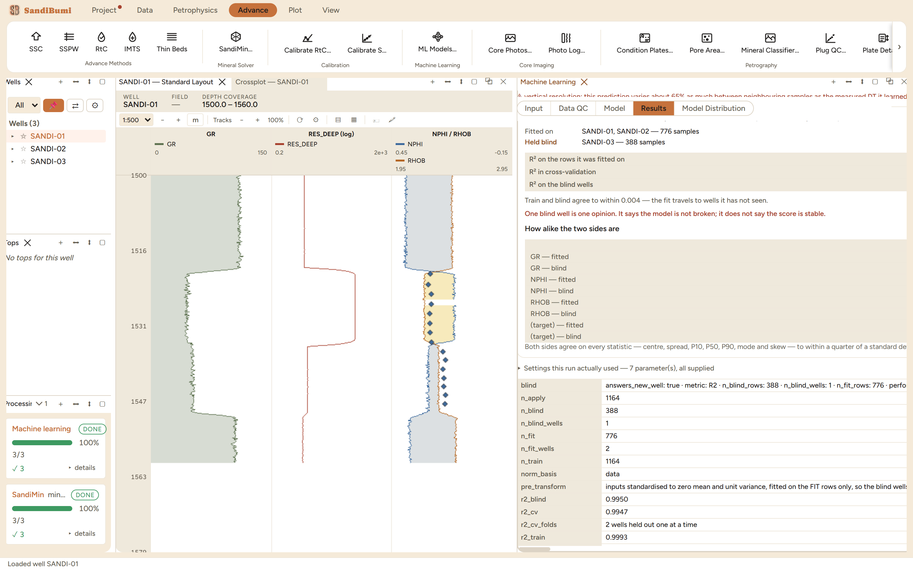

The Machine Learning pane fits scikit-learn models to log data: predict a
missing curve from the ones a well does carry, classify facies from a cored
well's labels, or cluster and reduce without a target. Reach for it when
the relationship you need is empirical rather than physical: a synthetic
sonic for the wells that were never logged with one, a permeability from
core-trained regression, a facies log extended from the cored well to the
rest of the field.
The pane

A Random Forest predicting sonic from gamma ray, neutron and
density: fitted on two wells (776 samples), one whole well held blind
(388), R² 0.9993 in-sample, 0.9947 in cross-validation, 0.9950 on
the blind well.
Input / Data QC / Model / Results / Model Distribution
sections walk left to right; algorithms cover regression,
classification, clustering and reduction, and Also run fits
rival algorithms on the same rows, split and seed so the comparison is
fair.
Blind test holds data back before fitting: random rows, or
whole wells, which is the honest option for logs because neighbouring
samples are correlated. The pane says what it actually did: "33.3% of
the data held back, held back as whole wells (asked for 30%, seed
42)".
Save model as stores the fitted model as a named artifact, so
the model trained on cored wells can be applied to next year's wells;
the scaler travels inside it, and feature order is part of the
contract.
Step by step
Open Advance ▸ ML Models…, pick the input curves
and the target, and leave standardization on for distance-based
algorithms.
Enable the whole-well blind test with a seed, then Run
Model through the custody dialog.
Read the three R² values in order, then the distribution
comparison, then the settings table that records what the run actually
used.
Reading the result
The three scores answer increasingly hard questions: in-sample
(0.9993, and the pane's own label calls the in-sample score "always the
flattering one"),
cross-validation with wells held out one at a time (0.9947), and the blind
well the model never saw (0.9950). Here they agree to within 0.004, and
the pane states both the conclusion and its limit:
Train and blind agree to within 0.004 — the fit travels to wells it has not seen.
One blind well is one opinion. It says the model is not broken; it does not say the score is stable.
The resolution warning above the scores is the other half of honesty: the
prediction varies only about 65% as much between neighbouring samples as
the measured sonic, so it is a smoother log than the one it stands in for.
Nothing invented the missing high-frequency detail, and thin-bed reading
off a predicted curve must respect that.
QC and pitfalls
Hold back wells, not rows. Random rows leak: each held-back
sample has near-identical neighbours in training, and the score
flatters. Whole wells are the deployment scenario.
Check the two sides are alike. The distribution table
compares fitted and blind wells feature by feature; a model tested on
wells unlike its training set earns a score that means nothing for
the next well.
A saved model is the deliverable. An applied curve records
which model produced it; retraining creates a new named model rather
than silently replacing the one already cited.